Kitchen screen · game prototype · October 2026
A tower defense game for the kitchen touchscreen. A gang of very silly ninjas sneaks across the backyard to raid the cookie jar, and Monster, JoJo, Little Miss and Frankenstein have to stop them.
The kitchen screen shows the family week. This adds something to tap while the pasta boils. It goes back to the week by itself when nobody is playing.
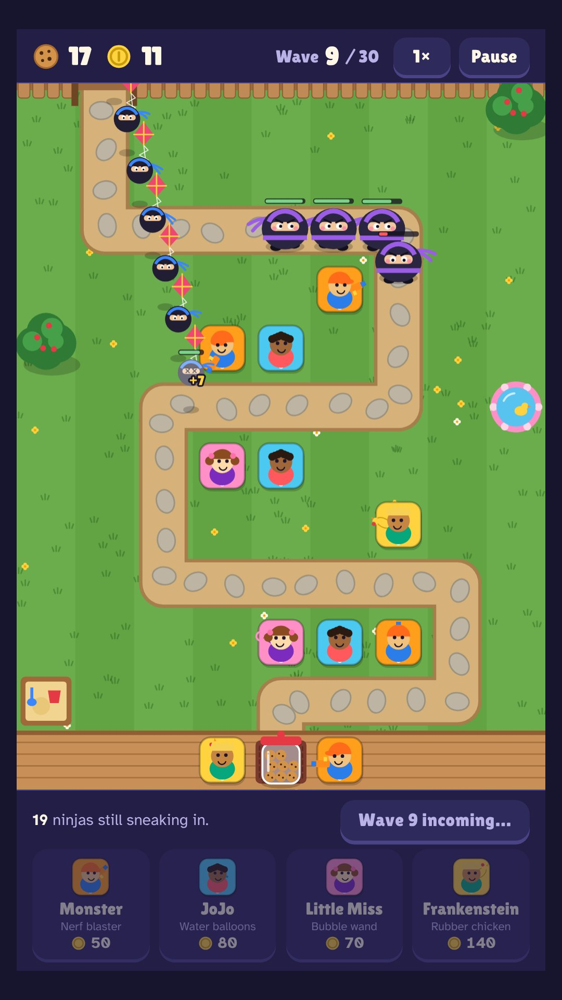
Each kid has their own job and 3 levels. Only Monster and Frankenstein can reach the kites.
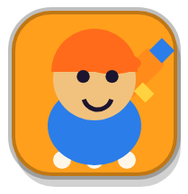
Nerf blaster. Fast foam darts, cheap and reliable.
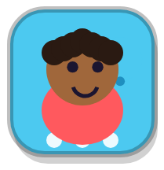
Water balloons. Each one soaks a whole group.
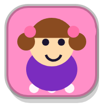
Bubble wand. Slows ninjas down, up to 3 at once at level 3.
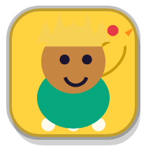
Rubber chicken. Throws it across the yard, and the bonk stuns.
Nobody gets hurt. A tagged ninja vanishes in a puff of smoke, sometimes with a complaint ("I'm telling Sensei!").
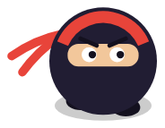
Tiptoes down the garden path. Mostly harmless.
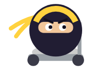
Zooms past fast. Bubbles slow it down.
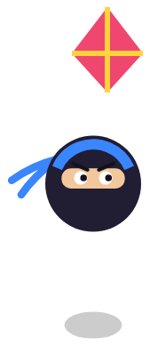
Flies straight over the yard and ignores the path.
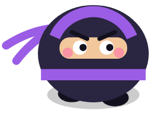
Big, slow and hard to budge. Bubbles only half work. Eats 3 cookies.
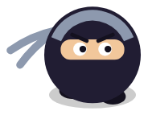
Vanishes in a puff and pops up further along.
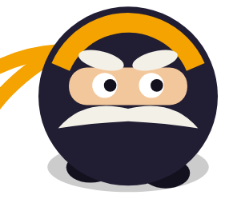
Enormous mustache. Splits into 4 ninjas when tagged. Eats 10 cookies.
This is the same file that would run on the kitchen screen, which is a portrait 1080 × 1920 touchscreen. It works with a mouse too, and a mouse also shows each kid's range before you place them.
The 1× button switches to double speed. Pause has Restart. Your best wave is kept in this browser only.
Open the game on its own page if the frame is too small.
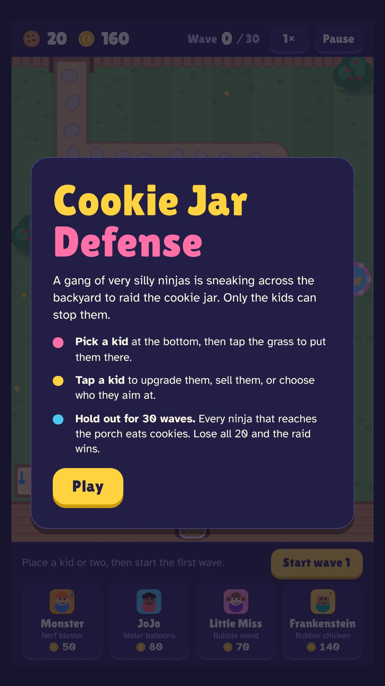
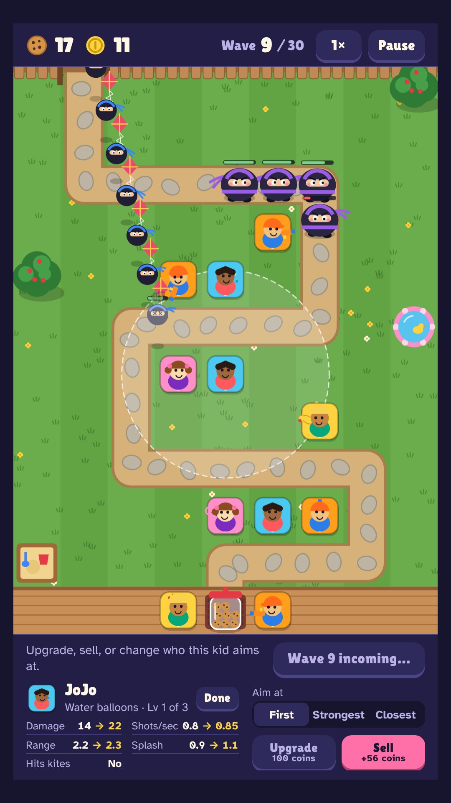
17 of 20 cookies left after wave 30
That's a scripted player that spends every coin and places kids well. It loses its first cookies to the Kite Ninjas on wave 5, and most rounds end with almost no coins left. That should be beatable for a careful player and a stretch for younger kids.
No real person has played it yet. The numbers are a starting point, not final.
kiosk.js stays under its 3 KB limit.game.html next to index.html, and have the Pi pull both files.index.html.